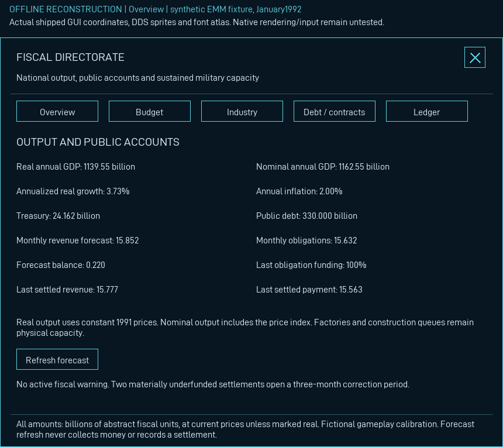
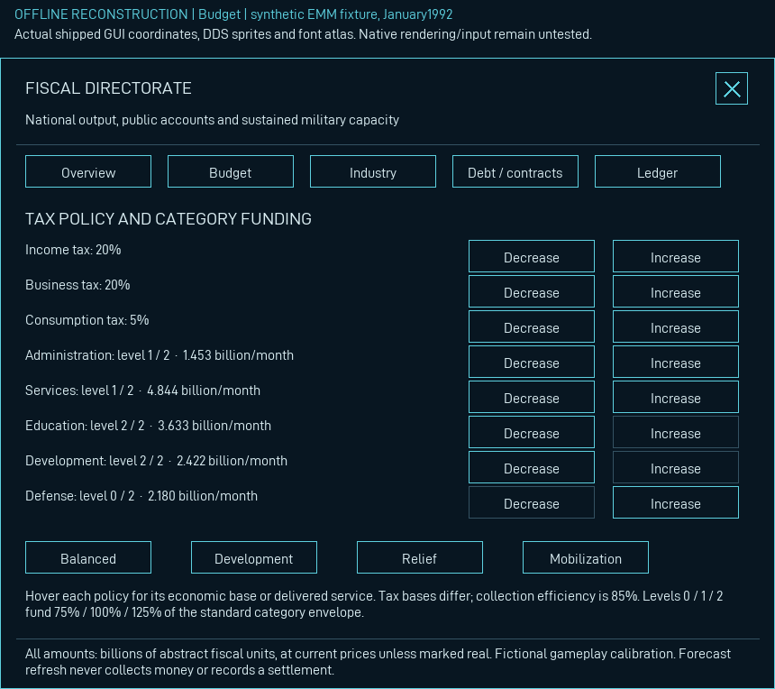
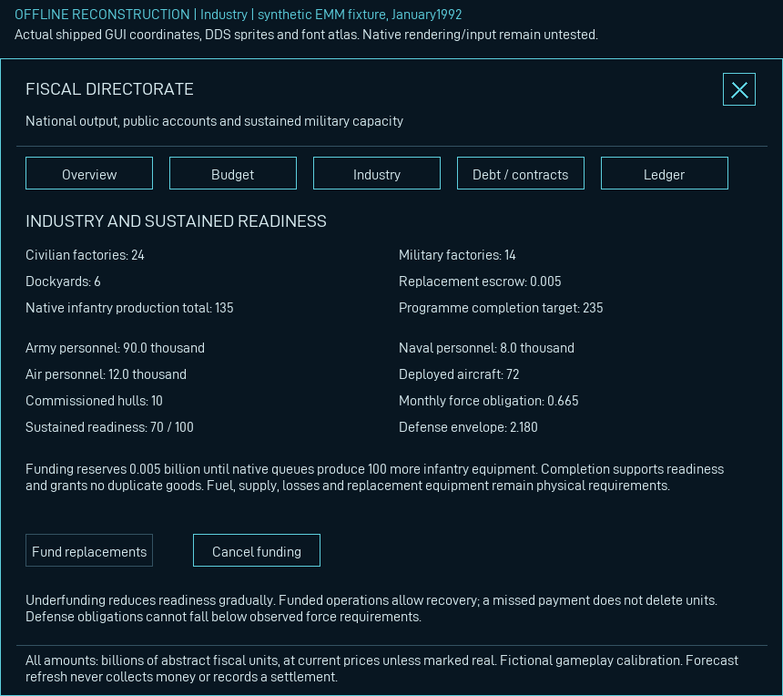
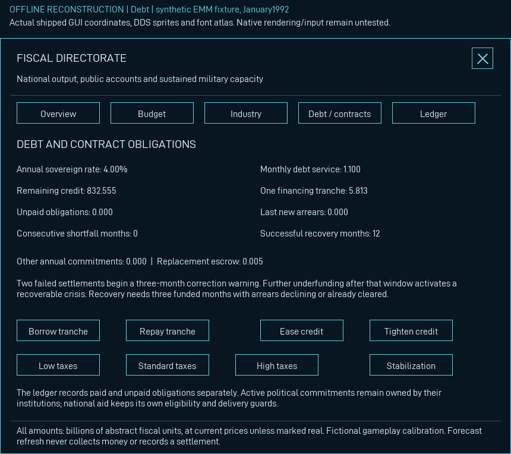
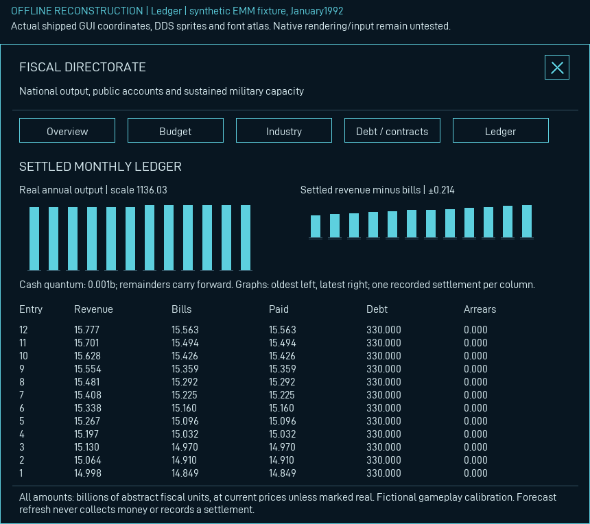

These review artifacts reconstruct the actual shipped860×700 GUI with delivered DDS sprites, font atlas, localization, variable bindings and visibility conditions. They are not game screenshots or a substitute product interface. The illustrative EMM fixture executes twelve actual-script monthly settlements, February1991–January1992, and retains all values in the audit record.
Native input, scaling, line breaking, tooltips and save serialization remain untested. Financial values are fictional gameplay calibration, not canonical national accounts.
No clipped text or out-of-window control bounds found in this fixture.




